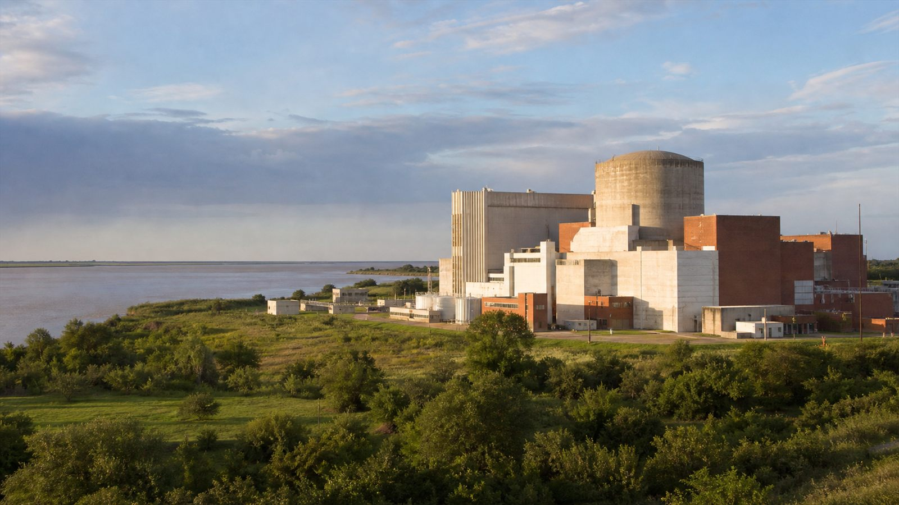
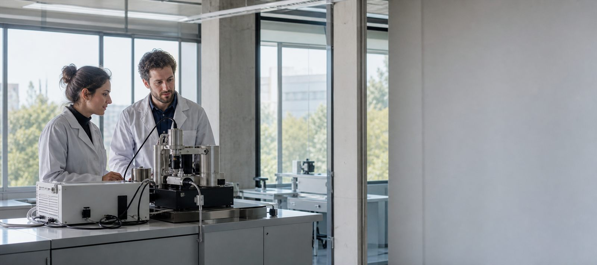

Rigor accesible
Conceptos científicamente correctos, explicados con ejemplos cercanos y lenguaje claro.
Proyecto educativo de ciencias
Energía nuclear, ciencia argentina y pensamiento crítico para los últimos años de la secundaria.
Una experiencia web que conecta conceptos, evidencias, modelos interactivos y problemas reales del país.
El propósito
Comprender la energía nuclear sin miedo, sin propaganda y sin simplificaciones.
Conceptos científicamente correctos, explicados con ejemplos cercanos y lenguaje claro.
Atucha, Embalse, CAREM, TANDAR, INVAP y las instituciones que hacen ciencia en el país.
Beneficios, riesgos, residuos y transición energética tratados con evidencia y preguntas abiertas.
Cada recorrido vuelve sobre una misma idea: la ciencia se comprende mejor cuando se conectan escalas, tecnologías y decisiones sociales.

El proyecto enlaza física con soberanía tecnológica, salud, industria y producción de conocimiento.
CNEA, ARN, NA-SA, INVAP, Instituto Balseiro, UNSAM y los desarrollos que forman parte de nuestra historia científica.
Una imagen, una simulación o una pregunta concreta abre el problema.
Ecuaciones, diagramas y analogías permiten representar lo que no vemos.
El concepto se conecta con medicina, energía, ambiente e investigación.
La evidencia se usa para comparar opciones y sostener una posición.
La web deja explorar procesos, escalas y sistemas que en el aula suelen quedar quietos.

Proyectar una visualización y recuperar ideas previas.
Explorar en grupos desde celulares o computadoras.
Registrar evidencias, comparar fuentes y resolver consignas.
Cerrar con una explicación, una producción o un debate.
Un sitio estático, rápido de publicar y fácil de abrir, sin cuentas ni instalación.
Una invitación a mirar la materia, la energía y la ciencia argentina con curiosidad y evidencia.
Proyecto educativo
Prof. Pereyra, Javier
Escuela secundaria argentina